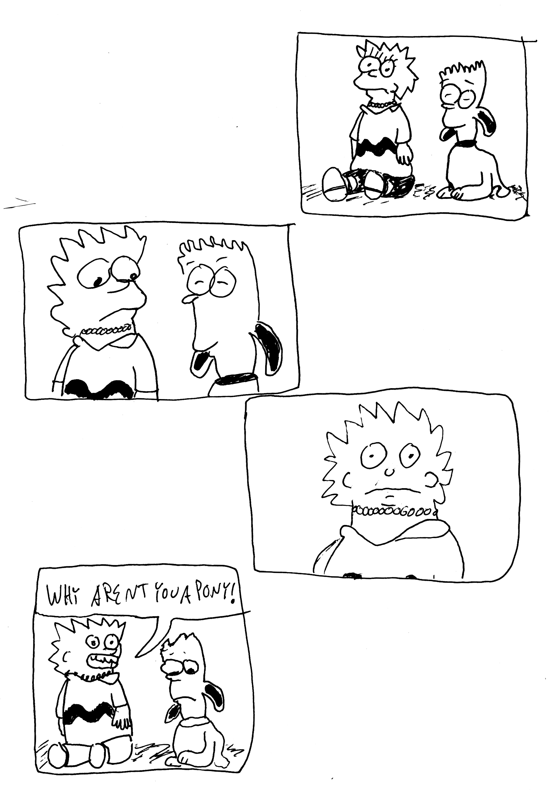
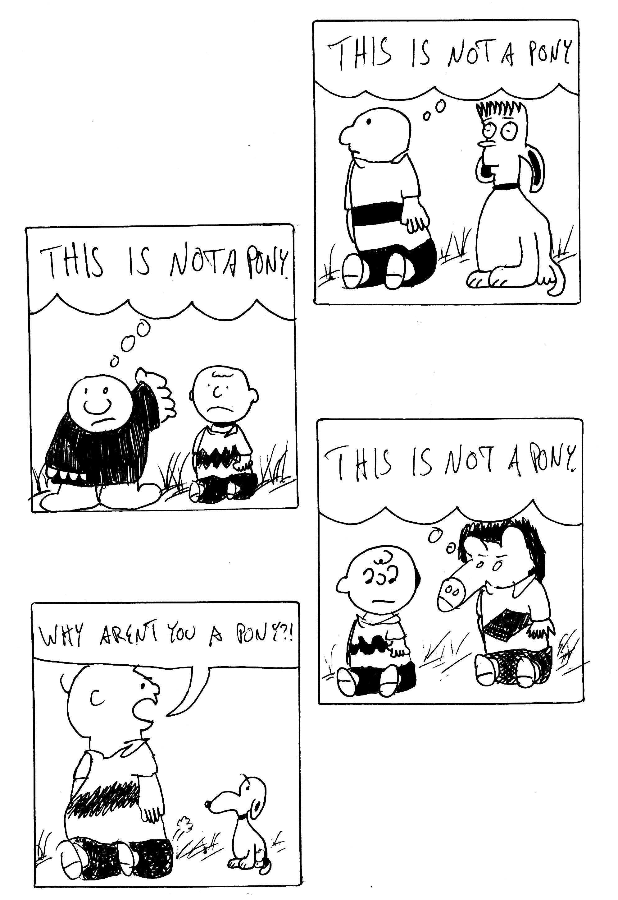
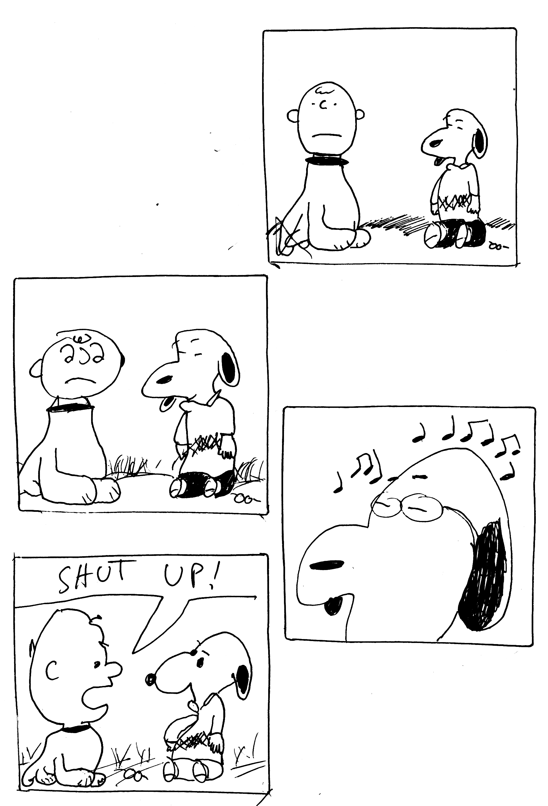
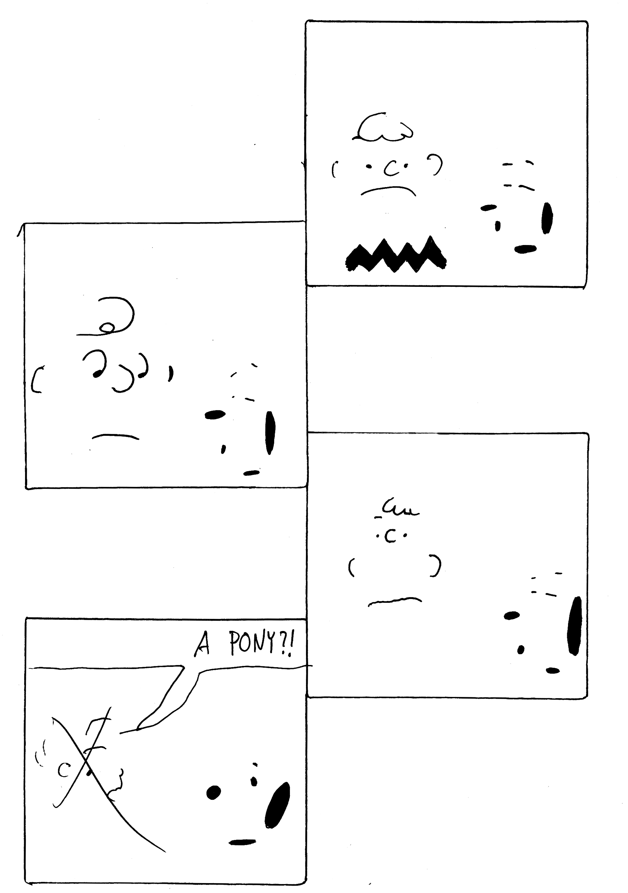

-
Death in June
by Lauren Belmore on July 1, 2015
06/18/14
I told my mother I’ve been waiting for rain and like any inkling I let it splash across my day’s page and take it full to the brim because the outside pavement is moist with weather and my apartment dimmed like it always does in the moments between sunset and rain and on the third day of course it rained somewhere other than my face because I’d been sleeping so harshly the last two days and I sleep like I cry like an infant that’s lost it’s mother in the same room or a toy right at it’s feet right out of it’s reach and tomorrow you leave for unseen lands and I stay in a place I now get to imagine without you and like anything important my heart pounds against my chest at the thought and you will come back and then I will leave and then I will come back and you will leave and then the time will come when we are in the same place at the same time and we will recount the memories the other did not see and the stories we tell will fall off our lips the same way the rain is off mine now off of the balcony where I still keep the same box full of empty cans of beer we drank that November night you told me you wanted to visit Sweden one day and I refused to kiss you but I held you so tightly as if the night would try and steal you away from me that maybe my arms would shield you from the bad memories and my arms had no tattoos then but two tattoos and many storms later I have fallen in love with your complexities and the way you shattered when I told you that it would be okay
06/22/15
It rained last week on the same day I wrote that message to myself because the weather knows the in’s and out’s of the string that binds us that sometimes wraps our fingertips too tight there is too much blood rushing into my hands when I ask how you are through a screen and I’ve been sitting upside down on my wall again trying to get it to flow to my heart trying to make my heart stop doing all the work and I flip my body to try and flip my realities you told me that last year was the lowest point in your life and I didn’t know what to feel and I miss the way I felt myself melt when you pointed out the cracks in my nail polish or the smell of dinner on your stove I haven’t done dishes in weeks I take pills to save money and you are unemployed and you want to make sounds that run in 2/4 time and I want to show you the way noise runs fault lines through my brain all static and sonic booms and the overcast of the buildings that loom in my bedroom window I am not sure if you are in love but you are swooning and I am swooning for so many things all of the time and now I am not open I am terrified I tell our friends I am not in love with you anymore but it’s the same principle for when I said I didn’t like emo when I got into John Cage I am still screaming those lyrics in my car alone and I am still reaching for your ribcage in the dark your skin nestled tight and soft against it the moisture from the humid southern summer layers our affections and I am still navigating the meaning of not wanting anything in return from someone that carries a piece of your soul with them for the rest of their lives
-
Li Bo and the Bending Light
by Steve Klepetar on June 30, 2015
“What’s the most fun you can have</br> with bending light?” he wants to know</br>
as we sit on the banks of the Rainy River</br> watching sunbeams break into rainbows.</br>
I shrug, throw some bread out onto the water</br> and we watch small fish leap and thrash.</br>
Suddenly his face is filled with light,</br> his hair ablaze with honey-gold.</br>
Then, shadows of clouds and a quick cold</br> ripple of wind. His hands burn red,</br>
and as the waves shorten all through</br> the spectrum, orange, green and all the rest,</br>
until they pulse ultraviolet, as he turns</br> to shield my face from x- and gamma rays.</br>
When clouds pass, air warms around us as</br> sunshine glides softly over the long river’s</br>
curl. He smiles, his face starlit, his shining</br> hands soaked, transformed by mystery and joy.</br>
-
From Horse Play II
by Emily Eigner on June 30, 2015
   
-
2 Poems
by Beyza Ozer on June 30, 2015
Has anyone died by
watching things sit
on water? By skipping
a flat rock across water?
Or trying to sit on water?
We are not birds.
Has anyone died before
seeing beautiful things
on the surface of a lake?
You. Did you at least get
a chance to look at the
clouds? Those balloons
won’t hold very long.
You don’t need oxygen
after passing the first
atmosphere. The balloon
will pop and you’ll be
Up There, waiting.
You’ll watch a bright dead
gas fall and take your place.
You will feel something
electric and soon your
bones will change from
white to blue. What used
to be your body will inflate
and glow. Nothing will be
able to touch you again.
Has anyone ever lived
through turning into concrete?
No, but it’s intense. I will
look up at you and rent a
light machine to send you
a message: I know you are
lonely right now
but I have ideas.I Am Moving Into A New House & Flipping All Of The Lightswitches On To Prove That I Am Capable Of Being Alive by Beyza Ozer
but i do not feel alive & it’s taken me a few years to get here. the walkway is slippery with old tears & the front porch hasn’t stopped dripping blood for approximately eight days. who do i talk to about this? the government?
i did not ask to die this way. i’m wondering what kind of clothing my parents would bury me in. they would pick a dress even though i had asked multiple times to be cremated. mom PLEASE shoot my ashes into space. beyza, what kind of a daughter are you?
i don’t want worms in my veins. paper cuts on eyes are something i will never stop crying over. feeling sand in between my toes reminds me of fucked up summers. i do not feel alive & i don’t want to be dead.
no one wants to live here. no one wants to make a home in the back of my throat. i want ghosts for neighbors, in theory.